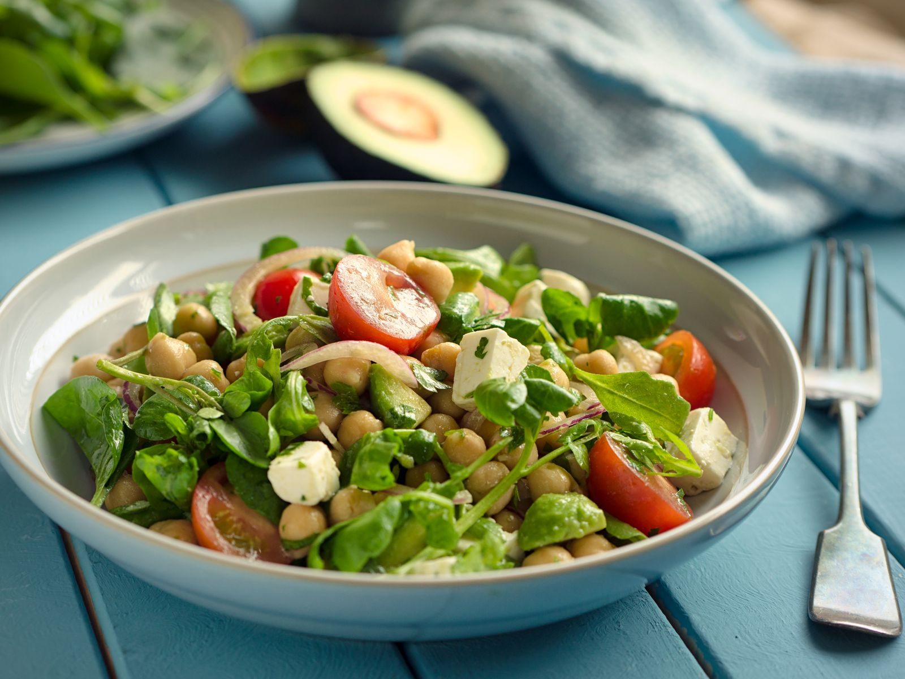

this is a great, easy way hot to make healthy salat
- cucamber
- tomatos
- kale
- oregano
- tuna
- salt
- soyagurt

then of course, we need step by step how to make it
- firstly, we need to prepare vegetables and chopped them
- put vegetables in to a nice bowl and add a bit of soyagurt
- we mix it with a tuna and add some of oregano, salt and a few drops of lemon
thats it - Bonapetitte